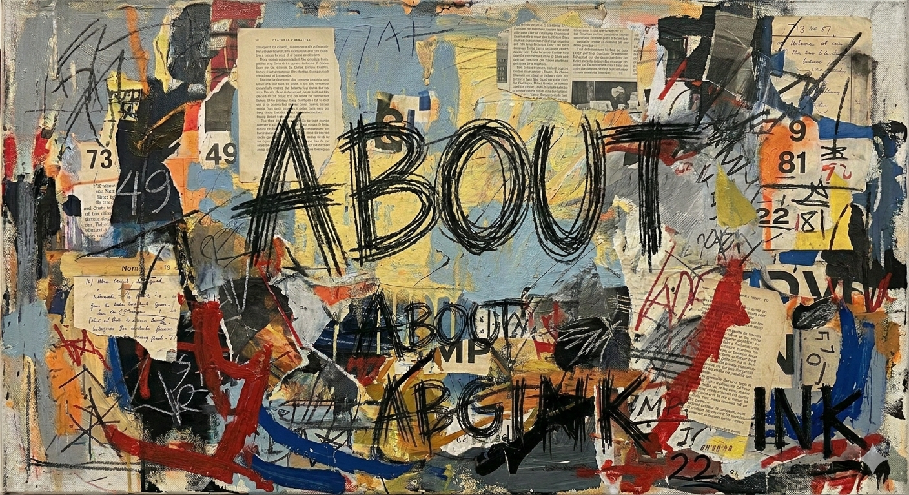

Words, images, stories, sounds — anything you can imagine — finds form here. And maybe, in watching things come to life, you’ll feel the pull to make something of your own.

mpgink exists to create, share, and celebrate the act of making things. We put art, writing, music, ideas, inventions, and experiments into the world — not because they’re perfect, but because they’re alive. Creativity is contagious. Sharing it is the spark.

A world where creativity is accessible, unpretentious, and everywhere. Where wonder is normal. Where making things is a way of life. Where connection is the outcome.


mpgink didn’t start as a studio. It started as a kid scribbling stories, building worlds, and trying to make sense of the spark that wouldn’t leave him alone.
Childhood writing, Opus/Berk Breathed influence, poetry, short stories — the first spark.
2009. Rap, spoken word, memorizing work, finding rhythm and voice.
Digital art, logos, characters, Friendlybook parody shirt, posters, photography.
mattymatte.com, MattyMatteModgePodge — a home for writing, then a long pause.
VacBat, Lyric Nest, Phish show scorecard — the tinkerer era.
Ableton, beats, piano aspirations — sound as another medium.
Etsy, print-on-demand, Arlo & Ash, the kids, wonder, Crunch Labs influence — the spark returning.

mpgink is the studio where everything converges — writing, art, music, inventions, experiments, and the weekly spark of Aloha Friday Motivation. It’s a place built on curiosity, momentum, and the belief that making things is a way of life. AI is a collaborator here, not a replacement — a tool that accelerates the spark, not one that steals it.
mpgink is a catalyst. The rest is yours.